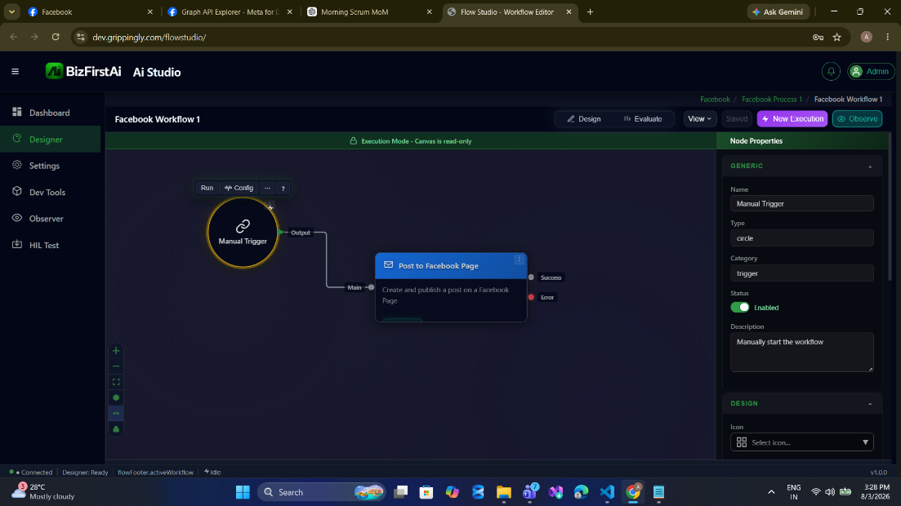
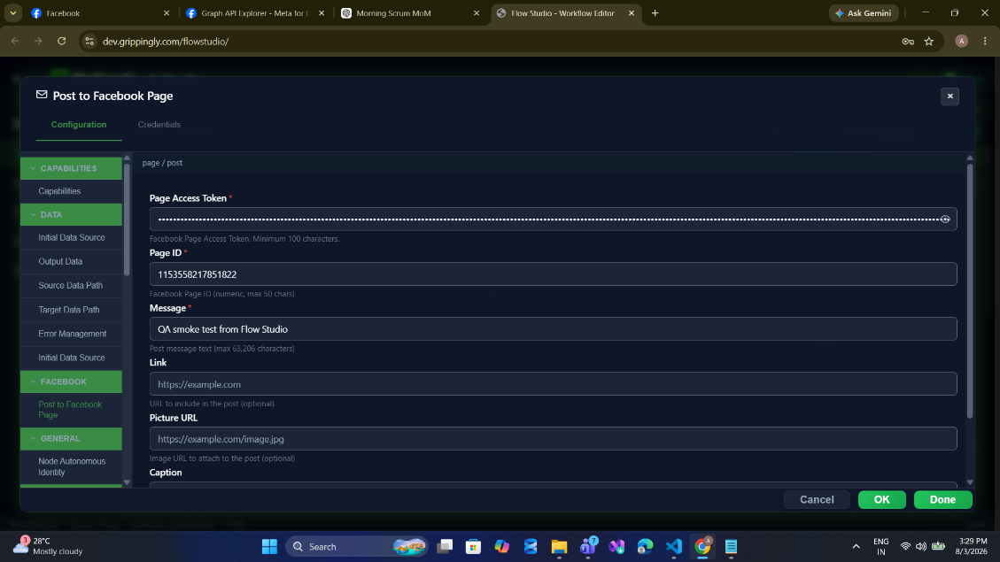

Facebook Node
Connect BizFirstAI workflows to a Facebook Page through the Meta Graph API. Publish and read posts, moderate comments, send Messenger replies, and upload media — 14 operations behind one authenticated node.
facebook, covering 14 operations against the Meta Graph API v25.0. Publish and read Page posts, comment and moderate, send and read Messenger conversations, and upload photos and video — all authenticated by a single Facebook Page access token.

Before You Start
Every operation needs a Facebook Page access token. This is the single hardest part of the setup, and getting it wrong accounts for most first-run failures. A User token where a Page token is required produces a confusing (#100) Unsupported get request rather than a permission error.
Read Authentication first. It covers how to obtain a non-expiring Page token, which Graph permissions each operation needs, and how to store the token in the Credentials Manager instead of pasting it into the node.
Quick Start — Publish a Post
- Drag Manual Trigger and Post to Facebook Page onto a process thread, and connect the trigger's output to the node's
Maininput. - Open the node's Configuration tab. The breadcrumb at the top of the panel confirms the routing pair —
page / post. - Fill in Page Access Token and Page ID, then a Message. Leave Link, Picture URL, and Caption blank unless you need them.
- Click Done, then New Execution.

page / post breadcrumb sits above the fields. The Credentials tab beside Configuration is where you attach a stored token instead of pasting one inline.A successful run puts the post on the Page and emits the new post ID on the success port. Full walkthrough with execution logs: page/post.
How This Guide Is Organised
Operations are documented twice, deliberately, because two different questions get asked about them.
Every reference page links to its walkthroughs and every walkthrough links back. The cross-cutting pages — Configuration, Authentication, Input & Output, Examples, Troubleshooting, Rate Limits, and Roadmap — apply to all fourteen.
Operations Reference by Resource
Testing Walkthroughs by Operation
Page
Post
Message
Reactions
Moderation
Media
Three Things That Surprise People
| Behaviour | Why it matters |
|---|---|
| List operations return a JSON string, not an array | page/getFeed, post/getComments, message/getConversations, and page/getInsights each emit one item whose field holds the entire raw Graph response serialised as text. Parse it downstream with a JSON Transform, Function, or Code Execute node. See Input & Output. |
| Operation names are camelCase and matched exactly | getFeed routes; getfeed and GetFeed do not. The Instagram and WhatsApp nodes use kebab-case, so configuration copied between nodes will silently fail to route. |
| Timestamps are stamped locally | createdTime and updatedTime are generated by the node when the call succeeds, not read from Facebook's response. They approximate the publish time; they are not Facebook's record of it. |
Resource and Operation Reference
The resource and operation pair is the routing key. Both values below are exact — case included.
| resource | operation | Graph call | Reference | Testing walkthrough |
|---|---|---|---|---|
page | post | POST /{pageId}/feed | Page Operations | Post to Facebook Page |
page | getFeed | GET /{pageId}/feed | Page Operations | Get Facebook Page Feed |
page | getInfo | GET /{pageId} | Page Operations | Get Facebook Page Info |
page | getInsights | GET /{pageId}/insights | Page Operations | Get Facebook Page Insights |
post | comment | POST /{postId}/comments | Post Operations | Comment on Facebook Post |
post | getComments | GET /{postId}/comments | Post Operations | Get Facebook Post Comments |
post | update | POST /{postId}?_method=PATCH | Post Operations | Update Facebook Post |
message | send | POST /me/messages | Message Operations | Send Facebook Message |
message | getConversations | GET /{pageId}/conversations | Message Operations | Get Facebook Conversations |
reactions | add | POST /{postId}/reactions | Reactions | Add Reaction to Facebook Post |
moderation | hideComment | POST /{commentId} | Moderation | Hide Facebook Comment |
moderation | deleteComment | DELETE /{commentId} | Moderation | Delete Facebook Comment |
media | uploadImage | POST /{pageId}/photos | Media Operations | Upload Image to Facebook |
media | uploadVideo | POST /{pageId}/videos | Media Operations | Upload Video to Facebook |
Node Facts
| Property | Value |
|---|---|
| Node type code | facebook |
| Palette category | Social |
| Graph API version | v25.0 |
| Authentication | Authorization: Bearer <page access token> header |
| Credential type | BEARER_TOKEN |
| Input ports | main |
| Output ports | main (Success), error (Error) |
| Request timeout | 30 s; 120 s for both media operations |
| Retry behaviour | Automatic on HTTP 429 and 5xx — 3 retries, Retry-After honoured up to 60 s |